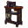
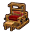
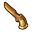
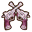

Machinery Crafting
 Machinery Assembly assembles machine parts into guns, engines and marionette parts.
Machinery Assembly assembles machine parts into guns, engines and marionette parts.
How it works
- Machinery Assembly is an Engineer (Machinery) skill, learned at Job Level 2, with 3 levels.
- Each skill level opens the recipes of that level. The Crafting page lists every Machinery Assembly recipe.
- Every recipe succeeds. Only the

Foot-operated Sewing Machine and the
Weaving Machine fail 1% of the time. - Many guns can also come out better:
- 5%: the +1 version, such as
 Automatic (Silver) +1
Automatic (Silver) +1 - 3%: the +2 version
- 1%: the +3 version
- 5%: the +1 version, such as
- Its level also raises the quality of machinery repair kits made with
 Machinery Repair Kit Craft. See Item Repair.
Machinery Repair Kit Craft. See Item Repair.
Assemble with an NPC
Talk to one of these NPCs with the materials and the tool in your inventory. They assemble every recipe up to Lv 3.
The fee depends on the recipe level:
| Recipe level | Fee |
|---|---|
| Lv 1 | 100 G |
| Lv 2 | 5,000 G |
| Lv 3 | 10,000 G |
The dual pirate muskets, such as  Dual Pirates Musket (Gold), cost 1,000 G.
Dual Pirates Musket (Gold), cost 1,000 G.
-
Junk Shopkeeper in the Iron City Junk Shop, Lower Part of Iron City.
-
Camillo in Camillo's Machinery Craftshop, Tonka Island.
 Junk Shopkeeper
Junk Shopkeeper
 Junk Shopkeeper
Junk Shopkeeper
 Camillo
Camillo
Tools
Most guns and robot parts need a  Screwdriver.
Screwdriver.
| Tool | Where to get it |
|---|---|
Firearms shops: |
Marionette parts
These build the  Electell Marionette.
Electell Marionette.  Marionette Construction makes the same parts. See Marionettes & Golems.
Marionette Construction makes the same parts. See Marionettes & Golems.
| Item | Materials | Tool | Recipe |
|---|---|---|---|
| - | Lv 1 | ||
|
- | Lv 1 | |
|
- | Lv 1 | |
|
- | Lv 1 | |
|
- | Lv 1 |
Guns
Most guns are a gun part, a  Gun Barrel, a
Gun Barrel, a  Machine Oil. Dual guns join two of the same gun.
Machine Oil. Dual guns join two of the same gun.
| Item | Materials | Tool | Recipe |
|---|---|---|---|
|
Lv 2 | ||
|
Lv 2 | ||
|
Lv 2 | ||
|
Lv 2 | ||
|
Lv 2 | ||
|
Lv 3 | ||
 Dual Revolver |
|
Lv 3 | |
|
Lv 3 | ||
|
Lv 3 | ||
| - | Lv 3 |
 Machine Oil is refined from 3 ×
Machine Oil is refined from 3 ×  Bottled Oil. See Refining.
Bottled Oil. See Refining.- Two +1, +2 or +3 pistols, revolvers, matchlocks or muskets make a dual gun of the same level.
Machines and other
| Item | Materials | Tool | Recipe |
|---|---|---|---|
| 10 × |
|
- | Lv 1 |
|
Lv 2 | ||
|
- | Lv 2 | |
|
- | Lv 3 | |
| 1 × |
- | Lv 3 | |
| Lv 3 | |||
| Foot-operated Sewing Machine | Lv 3 |
- The
 Turbo Engine is a Flying Garden part.
Turbo Engine is a Flying Garden part.